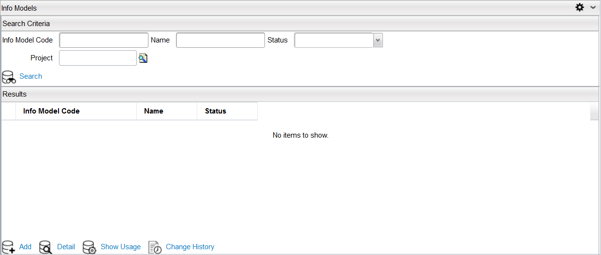

Info ModelsThe info model is a generic and flexible means to reference and manage data tables. Creating an Info Model enables the creation of reference table, info table, whose data can be populate and search data in Catalog Designer quickly. The info model holds the definition of the info tables within the Catalog Designer and provides the ability to reference these info tables using the Catalog Rule Language. The info tables are two-dimensional array of data that can contain either static or dynamic data. The table consists of rows and columns that can be defined and maintained within the Catalog Designer application. The info table might be used to configure and categorize geographic or demographic data, complex pricing structures, or other generic mapping tables for business logic. An Info Model allows the creation of tables and data to be used by the Catalog Rules. For example, a table may be created that contains a listing of brands, models, and discount pricing. The catalog rules linked to an Item searches on this table to find the selected item that matches a specific brand and model to determine the discount to apply when the item is added to a shopping basket. In Catalog Designer application, navigate to Designer > Info Models menu. The Info Models Search Criteria dialog appears as follows.  You can click the Search button to display all the info models, or enter information in the following fields to search a specific info model:
The detailed information appears in the Results pane. You can perform the following actions with an info model: |